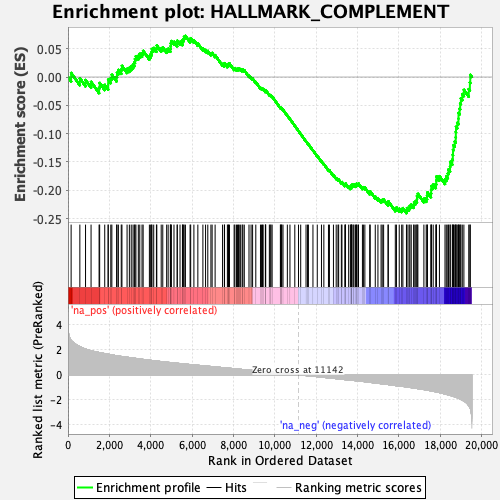
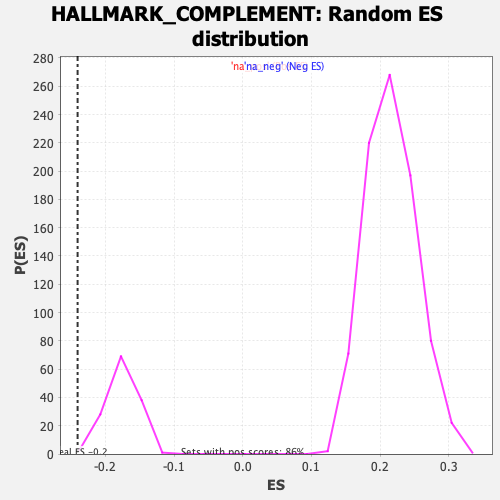

| | | Dataset | CK_basal |
| Phenotype | NoPhenotypeAvailable |
| Upregulated in class | na_neg |
| GeneSet | HALLMARK_COMPLEMENT |
| Enrichment Score (ES) | -0.24045472 |
| Normalized Enrichment Score (NES) | -1.351252 |
| Nominal p-value | 0.021582734 |
| FDR q-value | 0.13438481 |
| FWER p-Value | 0.266 |
Table: GSEA Results Summary

Fig 1: Enrichment plot: HALLMARK_COMPLEMENT
Profile of the Running ES Score & Positions of GeneSet Members on the Rank Ordered List
| SYMBOL | RANK IN GENE LIST | RANK METRIC SCORE | RUNNING ES | CORE ENRICHMENT | | 1 | MMP14 | 151 | 2.745 | 0.0072 | No |
| 2 | RNF4 | 573 | 2.246 | -0.0023 | No |
| 3 | CASP10 | 848 | 2.057 | -0.0052 | No |
| 4 | BRPF3 | 1115 | 1.923 | -0.0085 | No |
| 5 | GP1BA | 1503 | 1.781 | -0.0188 | No |
| 6 | APOBEC3G | 1531 | 1.772 | -0.0105 | No |
| 7 | CASP7 | 1776 | 1.694 | -0.0139 | No |
| 8 | ANG | 1942 | 1.643 | -0.0134 | No |
| 9 | GATA3 | 1943 | 1.643 | -0.0044 | No |
| 10 | CEBPB | 2069 | 1.607 | -0.0021 | No |
| 11 | PRKCD | 2120 | 1.592 | 0.0040 | No |
| 12 | PHEX | 2350 | 1.518 | 0.0005 | No |
| 13 | DOCK4 | 2370 | 1.514 | 0.0078 | No |
| 14 | APOBEC3F | 2436 | 1.497 | 0.0126 | No |
| 15 | PIK3CG | 2574 | 1.465 | 0.0135 | No |
| 16 | S100A12 | 2608 | 1.460 | 0.0198 | No |
| 17 | FN1 | 2856 | 1.403 | 0.0147 | No |
| 18 | S100A13 | 2967 | 1.377 | 0.0165 | No |
| 19 | MAFF | 3057 | 1.357 | 0.0193 | No |
| 20 | LTA4H | 3145 | 1.336 | 0.0221 | No |
| 21 | DPP4 | 3209 | 1.324 | 0.0261 | No |
| 22 | PRSS3 | 3239 | 1.317 | 0.0318 | No |
| 23 | HPCAL4 | 3283 | 1.307 | 0.0367 | No |
| 24 | IRF7 | 3400 | 1.281 | 0.0377 | No |
| 25 | PRSS36 | 3470 | 1.265 | 0.0411 | No |
| 26 | KLK1 | 3579 | 1.241 | 0.0423 | No |
| 27 | MMP15 | 3633 | 1.226 | 0.0462 | No |
| 28 | COL4A2 | 3935 | 1.165 | 0.0370 | No |
| 29 | C4BPB | 3996 | 1.153 | 0.0402 | No |
| 30 | RHOG | 4043 | 1.146 | 0.0441 | No |
| 31 | MSRB1 | 4057 | 1.143 | 0.0497 | No |
| 32 | LCK | 4144 | 1.125 | 0.0514 | No |
| 33 | DUSP5 | 4276 | 1.100 | 0.0506 | No |
| 34 | PSEN1 | 4294 | 1.095 | 0.0557 | No |
| 35 | MT3 | 4506 | 1.057 | 0.0506 | No |
| 36 | ANXA5 | 4582 | 1.046 | 0.0524 | No |
| 37 | USP15 | 4770 | 1.013 | 0.0483 | No |
| 38 | CDH13 | 4842 | 0.997 | 0.0500 | No |
| 39 | CFB | 4948 | 0.979 | 0.0500 | No |
| 40 | SERPING1 | 4965 | 0.976 | 0.0545 | No |
| 41 | KCNIP2 | 4971 | 0.976 | 0.0596 | No |
| 42 | PSMB9 | 4997 | 0.971 | 0.0636 | No |
| 43 | LCP2 | 5124 | 0.949 | 0.0622 | No |
| 44 | CASP9 | 5279 | 0.922 | 0.0593 | No |
| 45 | GCA | 5283 | 0.922 | 0.0642 | No |
| 46 | DGKH | 5416 | 0.898 | 0.0623 | No |
| 47 | STX4 | 5533 | 0.876 | 0.0611 | No |
| 48 | ITIH1 | 5541 | 0.874 | 0.0655 | No |
| 49 | SERPINB2 | 5593 | 0.865 | 0.0676 | No |
| 50 | MMP12 | 5612 | 0.861 | 0.0713 | No |
| 51 | SRC | 5677 | 0.853 | 0.0727 | No |
| 52 | LTF | 5903 | 0.820 | 0.0655 | No |
| 53 | CA2 | 5932 | 0.816 | 0.0685 | No |
| 54 | CASP1 | 6087 | 0.794 | 0.0649 | No |
| 55 | PLAUR | 6278 | 0.761 | 0.0592 | No |
| 56 | TFPI2 | 6522 | 0.725 | 0.0506 | No |
| 57 | SERPINA1 | 6651 | 0.703 | 0.0479 | No |
| 58 | OLR1 | 6759 | 0.689 | 0.0461 | No |
| 59 | PLSCR1 | 6910 | 0.662 | 0.0419 | No |
| 60 | CDA | 6968 | 0.654 | 0.0426 | No |
| 61 | PPP4C | 7113 | 0.633 | 0.0386 | No |
| 62 | CP | 7473 | 0.573 | 0.0231 | No |
| 63 | CR2 | 7561 | 0.558 | 0.0217 | No |
| 64 | F8 | 7568 | 0.557 | 0.0244 | No |
| 65 | ME1 | 7706 | 0.538 | 0.0203 | No |
| 66 | PDGFB | 7745 | 0.531 | 0.0212 | No |
| 67 | SIRT6 | 7759 | 0.529 | 0.0234 | No |
| 68 | KCNIP3 | 7807 | 0.522 | 0.0238 | No |
| 69 | GNGT2 | 8032 | 0.488 | 0.0149 | No |
| 70 | NOTCH4 | 8069 | 0.483 | 0.0157 | No |
| 71 | CTSB | 8149 | 0.470 | 0.0142 | No |
| 72 | CBLB | 8193 | 0.462 | 0.0145 | No |
| 73 | LAP3 | 8242 | 0.455 | 0.0145 | No |
| 74 | FCN1 | 8279 | 0.448 | 0.0151 | No |
| 75 | CDK5R1 | 8347 | 0.437 | 0.0140 | No |
| 76 | LYN | 8422 | 0.426 | 0.0125 | No |
| 77 | PIM1 | 8455 | 0.422 | 0.0131 | No |
| 78 | XPNPEP1 | 8523 | 0.410 | 0.0119 | No |
| 79 | ITGAM | 8751 | 0.377 | 0.0022 | No |
| 80 | C9 | 8852 | 0.362 | -0.0010 | No |
| 81 | F7 | 8925 | 0.351 | -0.0028 | No |
| 82 | ACTN2 | 9080 | 0.323 | -0.0090 | No |
| 83 | CTSV | 9306 | 0.287 | -0.0190 | No |
| 84 | DYRK2 | 9358 | 0.280 | -0.0202 | No |
| 85 | PLA2G4A | 9405 | 0.274 | -0.0210 | No |
| 86 | SERPINE1 | 9435 | 0.268 | -0.0211 | No |
| 87 | AKAP10 | 9544 | 0.248 | -0.0253 | No |
| 88 | CASP5 | 9547 | 0.248 | -0.0241 | No |
| 89 | C1QA | 9559 | 0.246 | -0.0233 | No |
| 90 | C1QC | 9735 | 0.223 | -0.0311 | No |
| 91 | GNG2 | 9776 | 0.215 | -0.0320 | No |
| 92 | F10 | 9814 | 0.211 | -0.0328 | No |
| 93 | WAS | 9869 | 0.201 | -0.0345 | No |
| 94 | DUSP6 | 10268 | 0.141 | -0.0543 | No |
| 95 | EHD1 | 10279 | 0.139 | -0.0540 | No |
| 96 | ADAM9 | 10326 | 0.133 | -0.0557 | No |
| 97 | VCPIP1 | 10334 | 0.132 | -0.0553 | No |
| 98 | CTSS | 10395 | 0.121 | -0.0578 | No |
| 99 | MMP8 | 10605 | 0.088 | -0.0681 | No |
| 100 | GZMB | 10731 | 0.067 | -0.0742 | No |
| 101 | PCSK9 | 10966 | 0.026 | -0.0862 | No |
| 102 | C2 | 11144 | -0.000 | -0.0953 | No |
| 103 | RBSN | 11251 | -0.018 | -0.1007 | No |
| 104 | JAK2 | 11509 | -0.056 | -0.1137 | No |
| 105 | GZMA | 11582 | -0.066 | -0.1171 | No |
| 106 | GRB2 | 11624 | -0.073 | -0.1188 | No |
| 107 | GPD2 | 11843 | -0.109 | -0.1295 | No |
| 108 | GZMK | 12052 | -0.145 | -0.1395 | No |
| 109 | RAF1 | 12255 | -0.177 | -0.1489 | No |
| 110 | CTSO | 12370 | -0.199 | -0.1537 | No |
| 111 | APOA4 | 12593 | -0.236 | -0.1639 | No |
| 112 | SPOCK2 | 12640 | -0.246 | -0.1650 | No |
| 113 | L3MBTL4 | 12834 | -0.278 | -0.1734 | No |
| 114 | DGKG | 12967 | -0.300 | -0.1786 | No |
| 115 | CXCL1 | 13053 | -0.315 | -0.1813 | No |
| 116 | CASP3 | 13086 | -0.320 | -0.1812 | No |
| 117 | GNB4 | 13216 | -0.344 | -0.1860 | No |
| 118 | GP9 | 13245 | -0.349 | -0.1856 | No |
| 119 | CPM | 13386 | -0.376 | -0.1907 | No |
| 120 | PDP1 | 13409 | -0.379 | -0.1898 | No |
| 121 | MMP13 | 13418 | -0.380 | -0.1881 | No |
| 122 | LRP1 | 13570 | -0.404 | -0.1937 | No |
| 123 | LGALS3 | 13652 | -0.420 | -0.1956 | No |
| 124 | PLA2G7 | 13688 | -0.426 | -0.1951 | No |
| 125 | PRDM4 | 13697 | -0.427 | -0.1932 | No |
| 126 | CD40LG | 13706 | -0.428 | -0.1913 | No |
| 127 | LGMN | 13729 | -0.432 | -0.1901 | No |
| 128 | HSPA1A | 13789 | -0.443 | -0.1907 | No |
| 129 | CD36 | 13826 | -0.448 | -0.1901 | No |
| 130 | CD46 | 13904 | -0.463 | -0.1916 | No |
| 131 | PLAT | 13936 | -0.468 | -0.1906 | No |
| 132 | PIK3CA | 13946 | -0.469 | -0.1885 | No |
| 133 | CFH | 14016 | -0.481 | -0.1895 | No |
| 134 | FCER1G | 14045 | -0.486 | -0.1882 | No |
| 135 | SERPINC1 | 14235 | -0.523 | -0.1952 | No |
| 136 | SCG3 | 14282 | -0.531 | -0.1946 | No |
| 137 | C1R | 14353 | -0.544 | -0.1953 | No |
| 138 | DOCK10 | 14589 | -0.594 | -0.2042 | No |
| 139 | IRF1 | 14611 | -0.597 | -0.2020 | No |
| 140 | CR1 | 14856 | -0.645 | -0.2111 | No |
| 141 | FYN | 14985 | -0.673 | -0.2141 | No |
| 142 | PFN1 | 15137 | -0.703 | -0.2180 | No |
| 143 | PLG | 15192 | -0.714 | -0.2169 | No |
| 144 | RASGRP1 | 15260 | -0.727 | -0.2164 | No |
| 145 | GNAI3 | 15473 | -0.770 | -0.2232 | No |
| 146 | IL6 | 15487 | -0.773 | -0.2196 | No |
| 147 | CTSH | 15825 | -0.852 | -0.2324 | No |
| 148 | CTSC | 15880 | -0.863 | -0.2305 | No |
| 149 | CALM3 | 16015 | -0.888 | -0.2326 | No |
| 150 | CALM1 | 16133 | -0.912 | -0.2336 | No |
| 151 | HNF4A | 16191 | -0.921 | -0.2316 | No |
| 152 | CSRP1 | 16364 | -0.959 | -0.2352 | Yes |
| 153 | CCL5 | 16393 | -0.967 | -0.2314 | Yes |
| 154 | PREP | 16486 | -0.988 | -0.2307 | Yes |
| 155 | CASP4 | 16529 | -1.000 | -0.2274 | Yes |
| 156 | USP14 | 16594 | -1.018 | -0.2252 | Yes |
| 157 | LIPA | 16712 | -1.045 | -0.2255 | Yes |
| 158 | KYNU | 16736 | -1.051 | -0.2210 | Yes |
| 159 | APOC1 | 16813 | -1.073 | -0.2190 | Yes |
| 160 | RABIF | 16871 | -1.087 | -0.2160 | Yes |
| 161 | USP16 | 16875 | -1.088 | -0.2103 | Yes |
| 162 | GMFB | 16916 | -1.098 | -0.2063 | Yes |
| 163 | CTSD | 17207 | -1.171 | -0.2149 | Yes |
| 164 | IRF2 | 17319 | -1.205 | -0.2141 | Yes |
| 165 | USP8 | 17361 | -1.218 | -0.2095 | Yes |
| 166 | F2 | 17379 | -1.223 | -0.2037 | Yes |
| 167 | TNFAIP3 | 17549 | -1.274 | -0.2055 | Yes |
| 168 | S100A9 | 17559 | -1.278 | -0.1990 | Yes |
| 169 | CTSL | 17570 | -1.284 | -0.1925 | Yes |
| 170 | C3 | 17657 | -1.313 | -0.1898 | Yes |
| 171 | ADRA2B | 17785 | -1.351 | -0.1890 | Yes |
| 172 | KIF2A | 17807 | -1.359 | -0.1826 | Yes |
| 173 | F3 | 17816 | -1.361 | -0.1756 | Yes |
| 174 | PIK3R5 | 17958 | -1.412 | -0.1752 | Yes |
| 175 | TIMP1 | 18228 | -1.524 | -0.1808 | Yes |
| 176 | ATOX1 | 18290 | -1.555 | -0.1754 | Yes |
| 177 | PRCP | 18364 | -1.587 | -0.1705 | Yes |
| 178 | HSPA5 | 18394 | -1.598 | -0.1633 | Yes |
| 179 | PLEK | 18472 | -1.630 | -0.1583 | Yes |
| 180 | PCLO | 18480 | -1.636 | -0.1498 | Yes |
| 181 | CPQ | 18581 | -1.691 | -0.1457 | Yes |
| 182 | CD59 | 18605 | -1.702 | -0.1376 | Yes |
| 183 | KLKB1 | 18616 | -1.708 | -0.1288 | Yes |
| 184 | PPP2CB | 18638 | -1.720 | -0.1204 | Yes |
| 185 | SH2B3 | 18699 | -1.750 | -0.1140 | Yes |
| 186 | ERAP2 | 18746 | -1.782 | -0.1066 | Yes |
| 187 | CD55 | 18751 | -1.785 | -0.0971 | Yes |
| 188 | GNB2 | 18761 | -1.788 | -0.0878 | Yes |
| 189 | RCE1 | 18820 | -1.824 | -0.0808 | Yes |
| 190 | ZFPM2 | 18878 | -1.860 | -0.0736 | Yes |
| 191 | F5 | 18881 | -1.863 | -0.0635 | Yes |
| 192 | C1S | 18936 | -1.901 | -0.0559 | Yes |
| 193 | CLU | 18962 | -1.926 | -0.0466 | Yes |
| 194 | ZEB1 | 18996 | -1.960 | -0.0376 | Yes |
| 195 | GNAI2 | 19063 | -2.014 | -0.0300 | Yes |
| 196 | TMPRSS6 | 19141 | -2.082 | -0.0226 | Yes |
| 197 | LAMP2 | 19377 | -2.465 | -0.0213 | Yes |
| 198 | FDX1 | 19431 | -2.600 | -0.0099 | Yes |
| 199 | DOCK9 | 19450 | -2.673 | 0.0038 | Yes |
Table: GSEA details [plain text format]

Fig 2: HALLMARK_COMPLEMENT: Random ES distribution
Gene set null distribution of ES for HALLMARK_COMPLEMENT